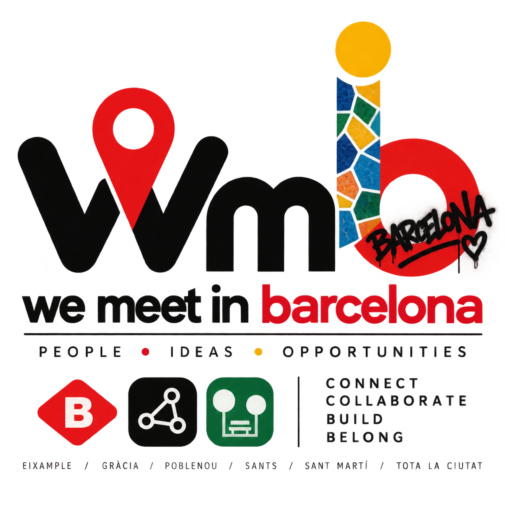

01 / 04
Born here.
The people whose families have been part of Barcelona for generations.

We're not entirely sure what We Meet in Barcelona is yet. And perhaps that's the point.
The title probably comes first: we meet in Barcelona. Which naturally raises the questions of who we meet, and when.
Part of it is social. Meeting people. Making friends. Dating. Going for a drink. Finding people to do things with.
Part of it is professional. Meeting people to work with, collaborate with, start something with, or simply exchange ideas.
But there is another part emerging alongside it: the people of Barcelona.
We're interested in conversations with people who have a genuine connection to Barcelona.
People who were born here. People who have lived here for decades. People who arrived from somewhere else and made a life here. And people who spent an important part of their lives here before moving on.
An artist. A startup founder. A housing activist. A neighbourhood bar owner. A musician. A slightly notorious local character.
Not necessarily famous people. Just people with a Barcelona story.
The people whose families have been part of Barcelona for generations.
People who arrived from somewhere else and became part of the city.
People whose Barcelona chapter mattered, even if they now live somewhere else.
People building their lives, businesses, friendships and communities here now.
We Meet in Barcelona isn't about seeing the city. It's about knowing people in it.
We're interested in the people who live here, grew up here, moved here, built something here, changed something here, or left a little bit of themselves here.
Alongside the social and professional side of We Meet in Barcelona, we're building a collection of conversations with people who have something to say about the city.
Some will be obvious choices. Others probably won't be.
We want to know what Barcelona looks like from different perspectives — the old neighbourhoods, the new businesses, the artists, the activists, the people who arrived yesterday and the people whose families have been here for generations.
And perhaps every interview leads to another person. Who should we meet next?
Maybe it's a social network. Maybe it's a magazine. Maybe it's a series of events. Maybe it's all three.